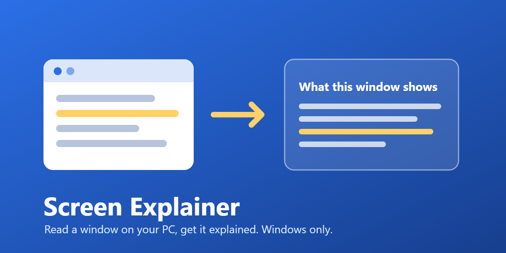

How it works
- Pick a window. The app lists up to 30 visible windows, and you choose the one you want.
- Read its text on your PC. The window you choose is captured in memory on your PC, and its text is read with Windows OCR on your PC.
- Edit. You see a small preview and the recognized text, and you can correct the text before you ask anything. OCR may misread small text.
- Ask. Press Explain, Summarize, Translate, or Action items to get the answer from the AI model that Anna provides.
Where it runs
Screen Explainer is for Windows only. It runs through Anna: its app window opens in the Anna web dashboard in your browser, and a small helper program runs on your PC through Anna's local agent.
Privacy in short
- The full-size screenshot is not saved and not uploaded, and it is not sent to the AI model.
- Only the text in the text box and your instruction go to the AI model.
- Pointframe, the developer, runs no server for this app, collects no telemetry or analytics from it, and stores nothing.
- Anna's own terms and privacy policy govern how Anna processes and retains data.
Do not pick windows that show passwords, payment details, or other secrets. The full details are in the Screen Explainer privacy policy.
Support
Questions and problems: open an issue at github.com/dimitar-radenkov/Pointframe/issues.